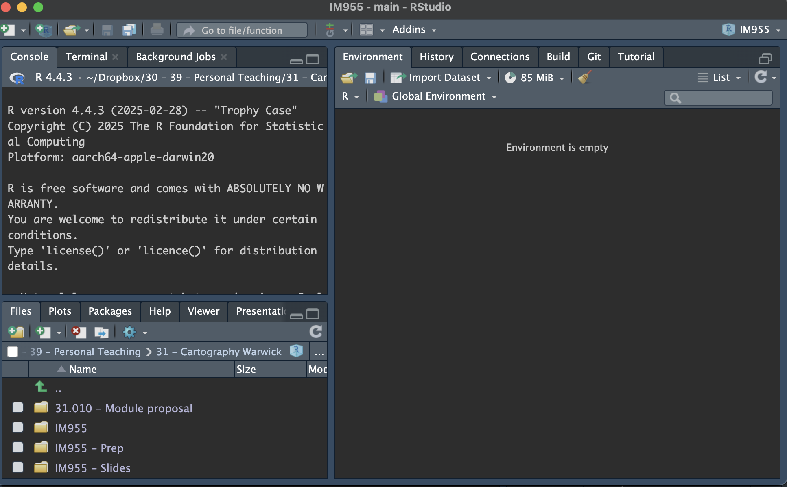
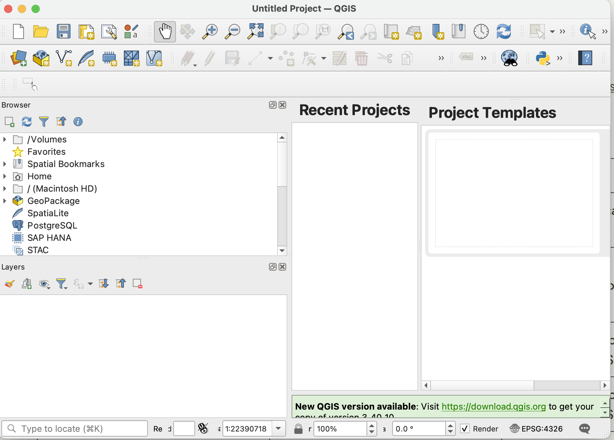
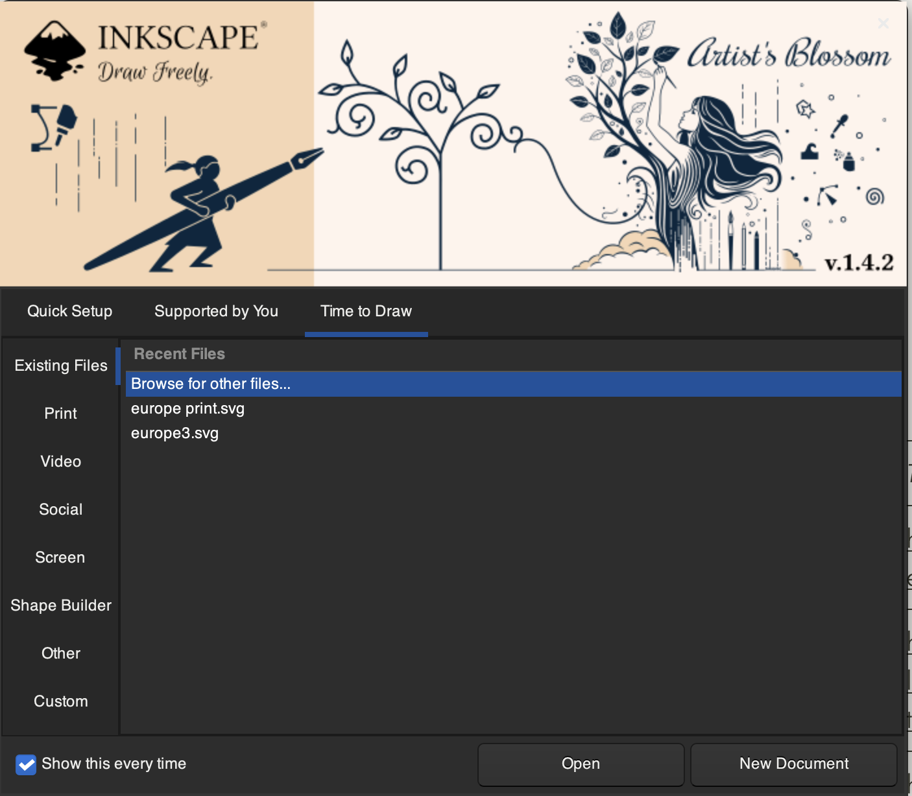
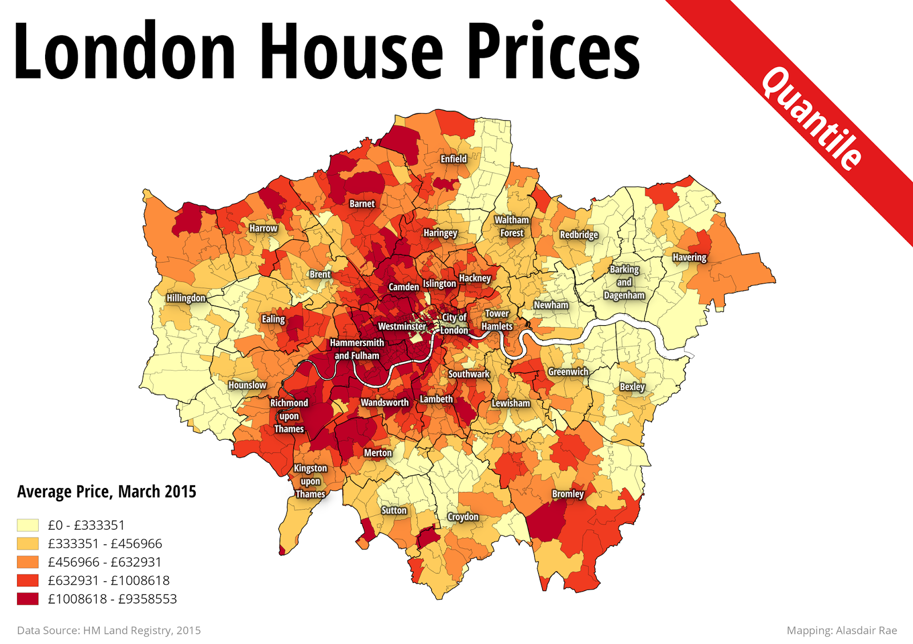
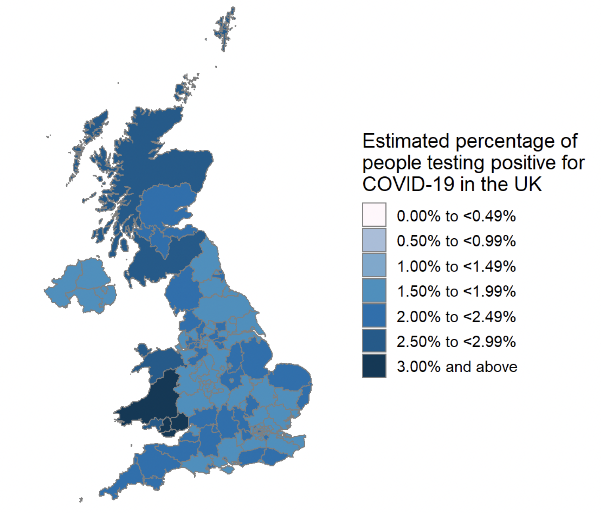
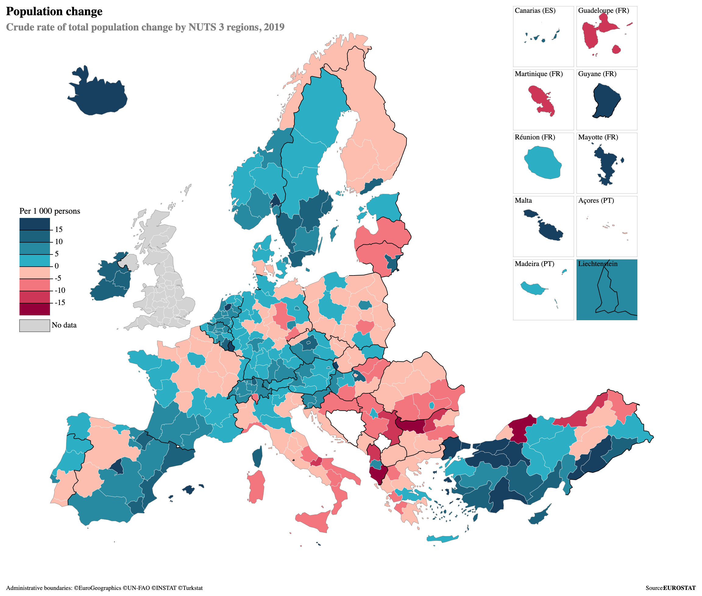
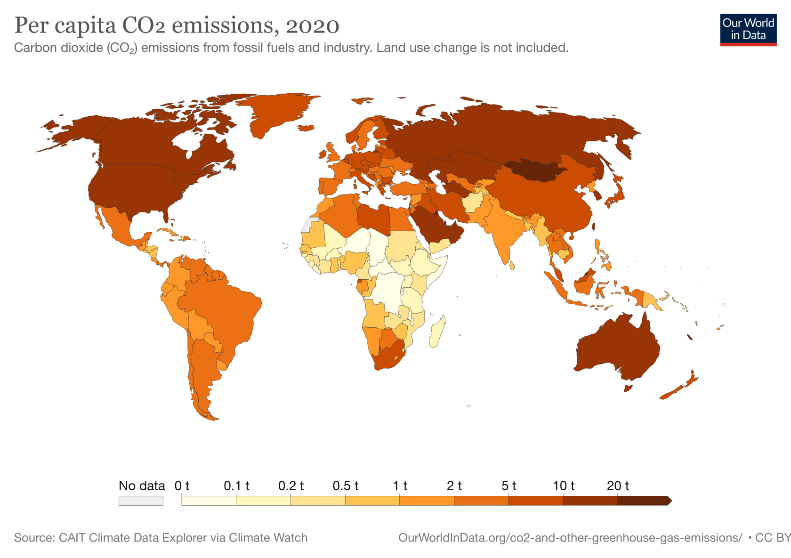

Week 1 - Introducing IM955
Laura Kurgan, Close up at a Distance: Mapping, Technology, and Politics (New York: Zone Books, 2013).
Read Chapter 1
- Make sure RStudio, QGIS and Inkscape are installed on your computer
- Watch the videos
- Try remaking the map yourself
Installing Software
Make sure you have right software installed on your computer:
For week 1, just installing this software is enough! You should be able to open each of these up and see a screen that looks like this:
RStudio

QGIS

Inkscape

Online lecture
Each week there will be a series of online videos that cover a topic in mapping. Make sure to watch these videos!. The purpose of each video is to act as a walkthrough showing you how to accomplish the tasks at hand. Please take your time to follow along, pause, or return to each video as you need.
Download this data, and make sure you know the folder in which it is located.
We are going start by making a simple form of map thematic map know as a choropleth map. These maps simply match up a variable to a specific geographical area. Most often this a numerical variable such as income levels, population, percents etc, to a administrative boundary, such as a country, city or other municipal boundary.

1 from : Jeremy Crampton, “GIS and Geographic Governance: Reconstructing the Choropleth Map,” Cartographica: The International Journal for Geographic Information and Geovisualization 39, no. 1 (2004): 41–53, https://www.researchgate.net/profile/Jeremy-Crampton/publication/250196446_GIS_and_Geographic_Governance_Reconstructing_the_Choropleth_Map/links/56a4ed2308ae1b6511326d41/GIS-and-Geographic-Governance-Reconstructing-the-Choropleth-Map.pdf.
2 If you would like to learn more about the history of this map check out: Gilles Palsky, “Connections and Exchanges in European Thematic Cartography. The Case of 19th Century Choropleth Maps,” Belgeo. Revue Belge de géographie, no. 3-4 (2008): 413–26, https://journals.openedition.org/belgeo/11893.
You have probably seen a choropleth map hundreds of times. They are a ubiquitous feature of modern life, and aside from a map used for navigation, are probably what most people would now think of as a ‘map’.




Maps like this are analytic, in that their purpose is not navigation, but are to be used to understand more about a specific phenomena and its spatial distribution. Analytic maps can be defined as:
“Distribution of social or physical phenomena in conjunction with social and natural sciences and governmentality, often called”thematic mapping,” but excluding “special-purpose maps” produced for narrowly specific ends within other modes; generally coarse resolution but can be fine.”3
3 From: Matthew H. Edney, Cartography: The Ideal and Its History, First edition (The University of Chicago Press, 2019).
Such maps are broadly know thematic maps - and bar week 5 - all the maps we will be making over the next 10 weeks will be some variation of a thematic map. In future weeks, and in the lectures, in class, and across all of the readings we will be exploring the relationship between the data on which such maps are built, the way the define, project and shape power, and how we can produce our own. But for now, lets jump into the making!
Steps to making map
If these videos aren’t loading make sure you are signed into your Warwick account. And if you are looking at this page before our first lecture they might also not load as you need to be part of the group IM955: Spatial Data - Microsoft Teams